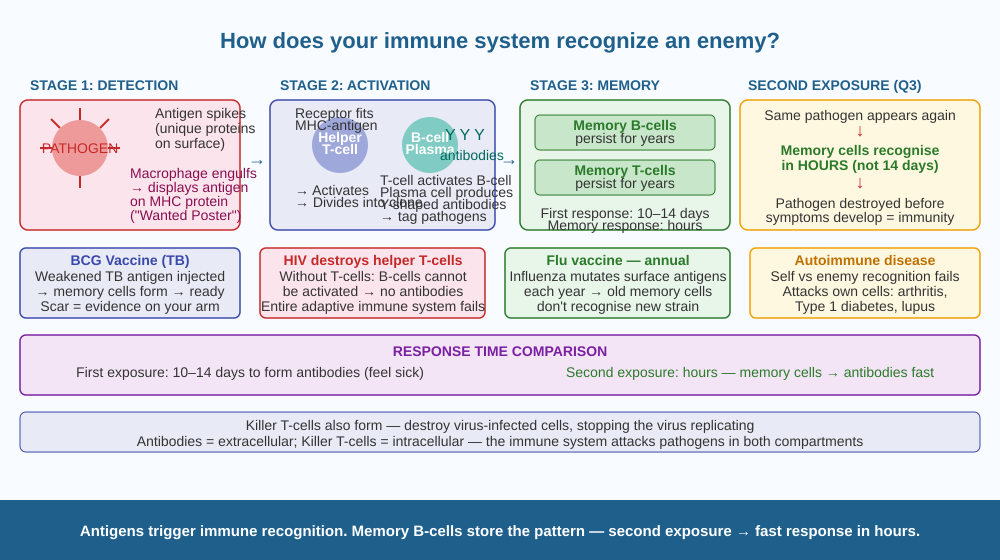

Discover the molecular lock-and-key system your immune cells use to distinguish "self" from "enemy" — and understand exactly how memory cells make second infections so much milder than the first.
Your body is invaded by millions of bacteria and viruses every day — but most of the time you don't get sick. When you do get sick, your body eventually clears the infection and remembers the invader for years. How does a system that has never seen a particular virus before know to attack it — and how does it "remember" something it has never been taught to recognise?
The immune system has two main branches: innate immunity (fast, general) and adaptive immunity (slow, specific, long-lasting memory).
Antigens: the identity badge of every pathogen
Every bacterium and virus has unique proteins on its outer surface called antigens (short for antibody generators). These molecular markers are specific to each pathogen — like a face uniquely recognisable to a face-recognition system. Your immune cells use these surface markers to identify foreign cells vs. your own cells.
How recognition works (adaptive immunity):
1. Phagocytosis and antigen presentation. When a bacterium enters the body, phagocytes (macrophages, dendritic cells) engulf it and break it into fragments. They then display antigen fragments on their surface using MHC (Major Histocompatibility Complex) proteins — acting like a "Wanted Poster" that shows other immune cells what the enemy looks like.
2. T-cell activation. Helper T-cells have surface receptors that recognise specific antigen-MHC combinations. When a helper T-cell's receptor fits the displayed antigen, it activates and divides into a clone of many identical T-cells.
3. B-cell activation and antibody production. Activated helper T-cells stimulate B-cells that recognise the same antigen. Activated B-cells become plasma cells that produce antibodies — Y-shaped proteins that bind to the antigen. Antibodies: - Mark pathogens for destruction by phagocytes (opsonisation) - Neutralise toxins by blocking them - Clump pathogens together (agglutination) making them easier to engulf
4. Memory cells — the immune system's note-taking. Both T-cells and B-cells produce memory cells that persist for years. On second exposure to the same antigen: - Memory cells recognise it within hours (vs. 10–14 days first time) - The immune response is far stronger and faster - The pathogen is destroyed before symptoms develop - This is exactly why Q3 answer is C: the second response is faster due to memory B cells.
5. Killer T-cells. Activated killer T-cells (cytotoxic T-cells) directly destroy your own cells if they are infected by a virus — preventing the virus from using those cells to replicate.
Think of each pathogen as a criminal with a unique face (antigen). The first time police (immune system) encounter this criminal, they have to identify him, put out wanted posters, assemble a task force (takes 10–14 days). The criminal causes significant damage in this time. But police also photograph and fingerprint the criminal. The next time the same criminal appears, police recognise him within minutes and arrest him before he can cause harm. Vaccines are a training exercise using a photo of the criminal — so police are ready before he even arrives.

The diagram shows a flow chart in three stages. Left: Pathogen (bacterium with antigen spikes) enters. Macrophage engulfs and displays antigen on MHC. Centre: Helper T-cell with matching receptor binds to MHC-antigen complex → activates. B-cell also recognises antigen → plasma cell → Y-shaped antibodies flood out. Right: Memory B-cells and memory T-cells shown stored (labelled "years of memory"). Second exposure box: virus enters → memory cells respond in hours → no illness.
Look at your arm for the small round BCG vaccination scar (most Indians have one). This scar marks the spot where a weakened tuberculosis antigen was introduced under your skin. Your dendritic cells picked up the antigen, activated T-cells and B-cells, and memory cells formed. Those memory cells are still there — ready to deploy against tuberculosis. The scar is the physical evidence of immune memory being written into your body.
Some people are born with SCID (Severe Combined Immunodeficiency) — they have no functional T-cells or B-cells. They must live in sterile bubbles because any infection, even a common cold, could be fatal. In 1971, a boy in Texas named David Vetter lived for 12 years in a plastic sterile bubble — "the boy in the bubble." Gene therapy has since allowed some SCID patients to be cured. Consider: if you had to design a treatment for SCID, would you try to repair the immune cells (gene therapy), give the patient frequent antibody transfusions, or attempt a bone marrow transplant? What would be the risks and benefits of each approach?
What does the immune system use to identify foreign invaders?
Why is understanding the immune recognition mechanism useful?
If a person encountered a pathogen for the second time, what would you predict?
A drug company is designing a new vaccine against a fictional bacterium called Bacterium X. They have identified its most distinctive antigen protein (AntX). Design the vaccine: (a) What form should AntX be in — live, dead, weakened, or just the protein? Explain why. (b) Should the vaccine be given once or multiple times? (c) How would you test whether the vaccine created memory cells without exposing test subjects to the real bacteria? Describe one test method.
Your body is producing antibodies right now — without any infection. B-cells randomly generate antibody molecules with billions of different shapes (through a process of genetic shuffling during development). Most of these antibodies never match anything in your life. They are the immune system's preparation for pathogens you have never encountered and may never encounter — a library of locks waiting for keys. The key insight: diversity in the immune system is generated before the threat, not in response to it.
Antigens on pathogen surfaces trigger immune recognition. Helper T-cells activate B-cells → antibodies neutralise pathogens. Memory B-cells persist for years → second exposure = fast response in hours. This is why vaccines and past infections provide protection.